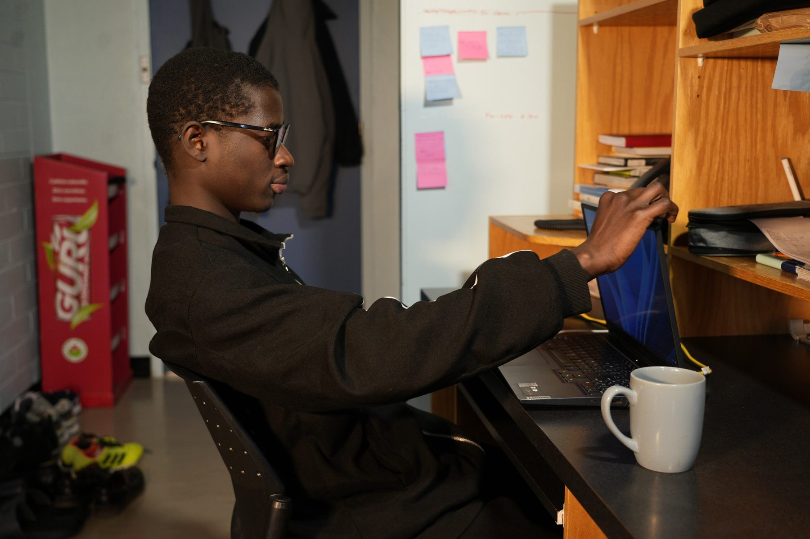
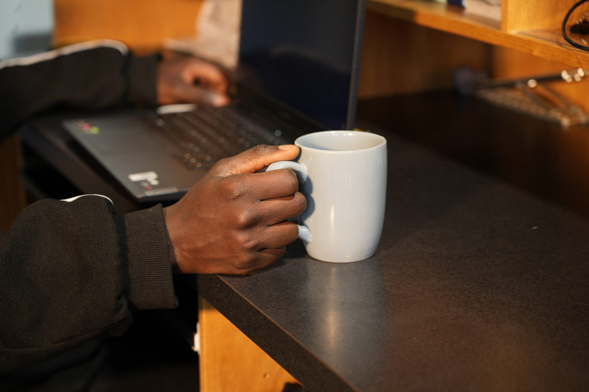
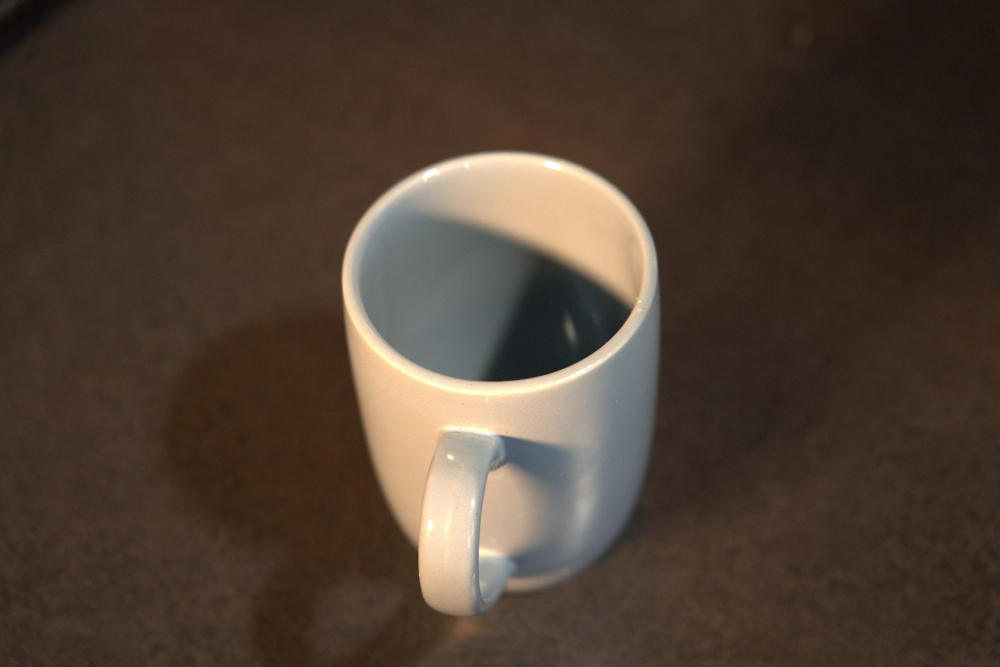
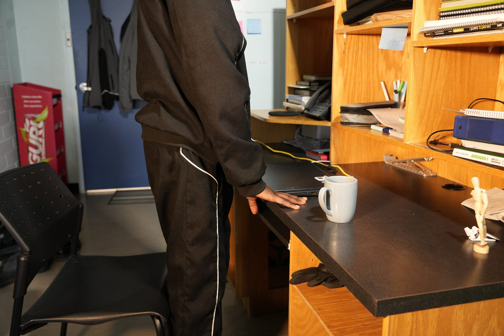

La mauvaise journée
- Catégorie
- Motion design
- Année
- 2026
- Type
- Projet scolaire
- Format
- 30 secondes, 6 images par seconde
- Rôle
- Scénarimage et rotoscopie
Le processus
Les références
Le style vient de l'illustration en ligne noire, sans remplissage. Waking Life m'a guidé pour la cadence et la liberté du trait, A Scanner Darkly pour les changements d'angles.
Le scénarimage
J'ai découpé les 30 secondes en quatre scènes. Pour chaque plan, j'ai noté les actions, la valeur de plan et les effets.
La rotoscopie
J'ai redessiné la vidéo image par image, à 6 images par seconde, en laissant le trait irrégulier.
Les photos prises pour le scénarimage. Cliquez sur une photo pour l'agrandir.



